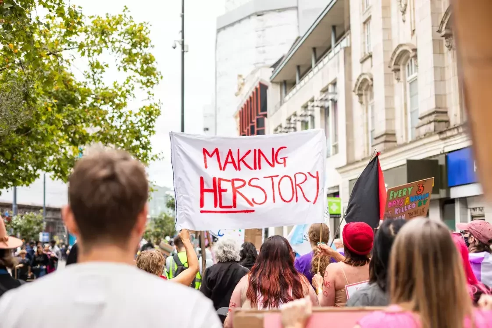
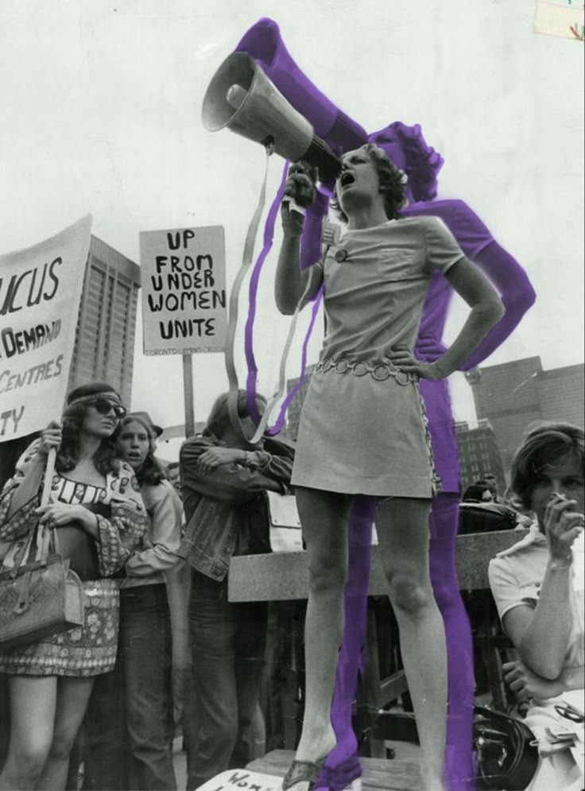
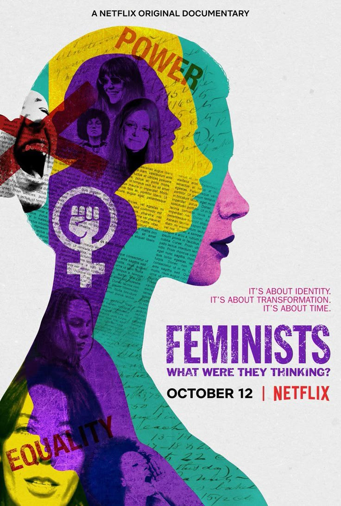
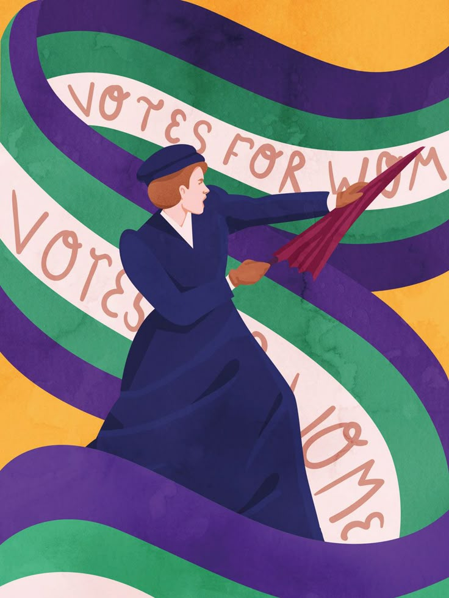
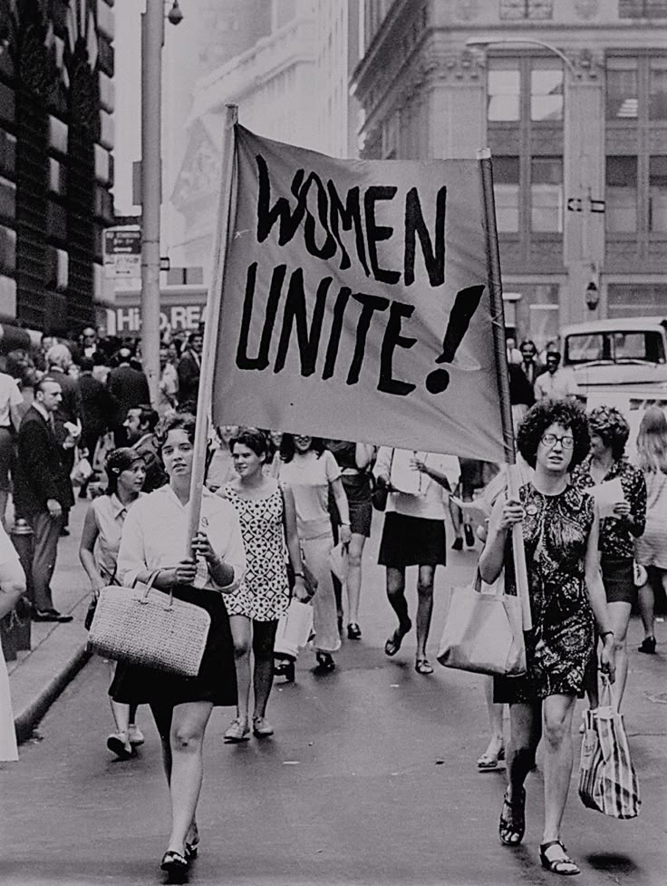
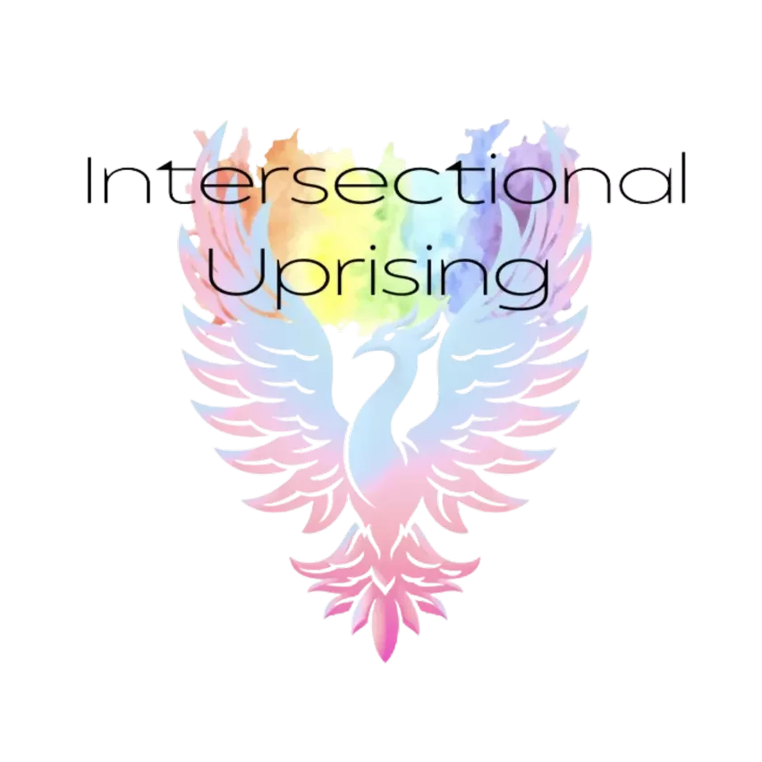
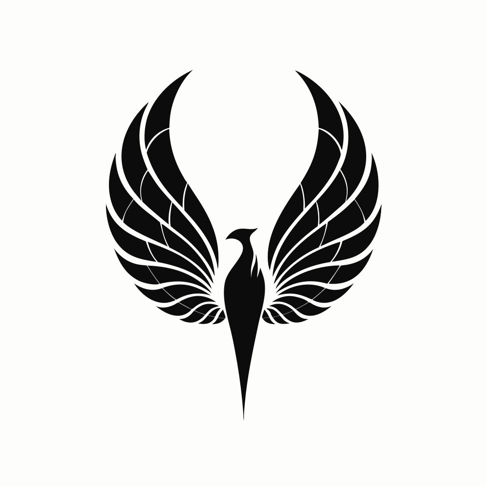
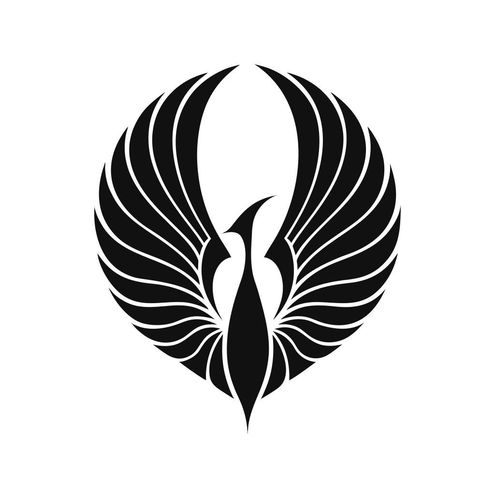
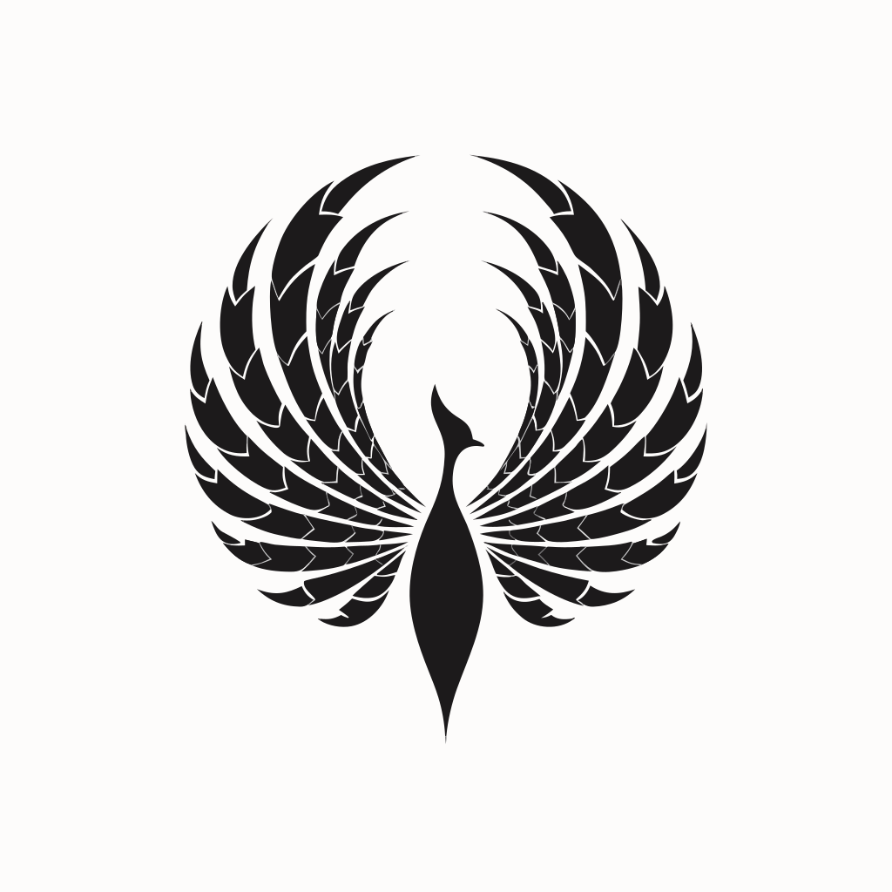
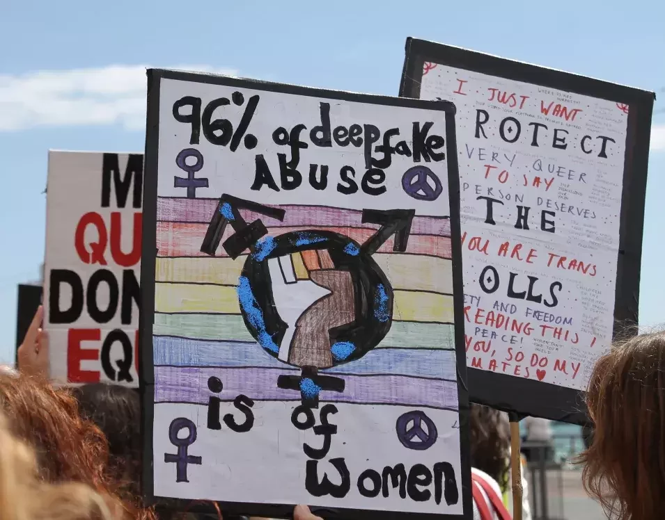

A proposal for Alix Valentine-Colquhoun / Intersectional Uprising
IU is a serious movement. Fifteen chapters, 14,000 followers, marches in cities across the country on the same day. It deserves a visual identity that looks like it. This is a proposal for exactly that.
Contents
01 The situation
Right now, every chapter produces content their own way. The feed has no visual thread. The mark is not being used. New chapters have nothing to start from. That is not a content problem. It is a brand infrastructure problem.
The symptom
Scroll the feed and you will see different fonts, different palettes and different tones in every post. Some content is hand-made with whatever app was nearest. Some is partner content posted as-is. None of it adds up to a brand.
The cause
The current logo does not translate to graphic use. There is no agreed colour palette, no shared fonts, no templates. Every chapter social lead starts from scratch every time they post.
The risk
An audience that size is a genuine asset. But if the feed does not read as a coherent movement, that audience does not compound. Partners and press do not take it seriously because it does not look serious.
The opportunity
Nothing changes about what IU is. The energy, the causes, the community stay exactly as they are. What changes is that everything starts looking like it came from the same place.
02 The thinking
Every decision here has a reason behind it. This is not a style applied to IU from the outside. It is an attempt to find the visual language that already belongs to what IU is.
The mark
IU is a movement about rising. The phoenix is the oldest symbol of that. Not clipart, not a wordmark: a mark that can live on a placard, a jacket, a profile image or a banner. Something with weight. Something that reads at distance.
The palette
Violet for suffragette heritage and power. Green for grassroots and growth. Pink for feminist visibility and energy. Ochre for earth, warmth and the printed pamphlet. Near-black and parchment for contrast and legibility.
The texture
The grain running through every section references the visual history of grassroots organising: risograph printing, photocopied zines, hand-run community newsletters. The texture of people making things without a budget.
The type
Bebas Neue for the bold graphic moments: headlines, placards, countdowns. Cormorant Garamond italic for the intellectual layer: quotes, principles, statements. DM Sans for the functional layer: navigation, captions, body copy.
The photography
Every photograph uses the same colour grade: partially desaturated, shifted toward the brand palette, with a gradient overlay. Different photographers, different cities, same visual language across every chapter.
The Instagram system
Nine tile types covering every post IU needs to make. The individual posts do not need to be perfect. The grid builds meaning as it grows: every new post reinforces the one before it. A feed that reads like a movement.




The palette
Display / graphic
Headlines, placards, countdowns, CTAs. The graphic weight of the brand.
Editorial / italic
Quotes, principles, statements. Intellectual weight and contrast to the bold type.
Functional / body
Navigation, captions, body copy. Clean and readable at every size.
03 The work
Everything here is a working deliverable, not a mockup. The website is functional HTML. The brand guide is ready to print. The Instagram system is ready to hand to chapter leads the day the package is built.
The mark
A purpose-built phoenix mark for IU. Works at any scale, on any background. Four directions were explored before arriving at the final mark.
What IU had

Existing markWhat I worked up

Variant A
Variant B
Variant DThe chosen mark
Instagram grid system
Nine tile types. Every post IU needs to make, templated and ready. Chapters swap in their photo and text. Everything else is locked.

Website concept
A full working website built to the brand. Interactive chapter map, real march photography, mobile responsive. Open it in a new tab to explore the full thing.
Working HTML mockup
Hero, about, interactive chapter map, march gallery, support, team and contact. All sections built. All copy placeholders clearly marked for Alix to fill.
04 The rollout
The whole system is designed so you only have to do one thing: share a link. Everything after that runs itself.
All assets: mark files, Canva templates, the one-page guide and the AI prompt are compiled into a single downloadable folder. Everything is named clearly. Nothing requires a designer to open it.
One email, one link, one zip. Each chapter social lead downloads the folder. The link works for every new chapter that joins after that too. Or share templates via a Canva team folder so everything updates from one place.
Upload the templates to a Canva account. All nine Instagram templates are there. Open one, drag in the photo, type the text, export. No design decisions to make. The system makes them.
Paste the brand prompt into Claude or ChatGPT. Ask it to write a caption, a story script or a press release. It knows the brand voice, the values and the tone. It writes like IU, not like a generic charity.
Every chapter posts in the same visual language. Different cities, different content, different photos. But the same mark, the same palette, the same type. For the first time, scrolling IU's feed feels like one movement.
Week 1 / Stage 1
One hour together to review what I have built, confirm the direction and agree exactly what goes into the package.
Week 2 / Stage 2
Canva templates built to spec. One-page guide designed. AI prompt written and tested. Mark files exported in all formats. Everything zipped and labelled.
Week 3 / Stage 3
Package delivered. One-hour walkthrough call covering templates, chapter distribution and the AI prompt. Any final tweaks made.
Ongoing / Stage 4
You distribute to chapter leads. I can provide a short video walkthrough for chapters that need it. Available for questions for two weeks after handover.
05 The offer
I want to be straightforward with you about two things: what this cost to produce, and what I want in return.
Most of the production work here was done with AI tools. I want you to know that. The strategy, the design direction and all the judgment calls are mine. The AI executed to my brief. I am telling you this because it is how I work and because it is relevant to the price. If I had built this entirely by hand it would cost three times as much and take twice as long. The tools exist now to give a grassroots feminist collective a genuinely professional brand identity at a cost that makes sense. That feels like exactly the right use of them.
What this would cost
Fixed fee. This is what a brand system like this is worth.
What I am asking from you
You are my first rollout. That matters to me.
After this point
Everything in this proposal is free. Once the package is delivered and you are happy with it, anything else you want: campaign management, additional templates, social content strategy or an ongoing retainer, those are paid engagements. We agree scope and price before anything starts. Nothing is assumed.